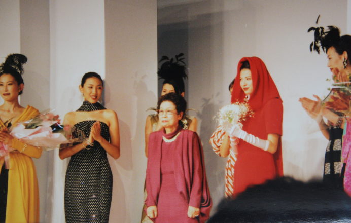
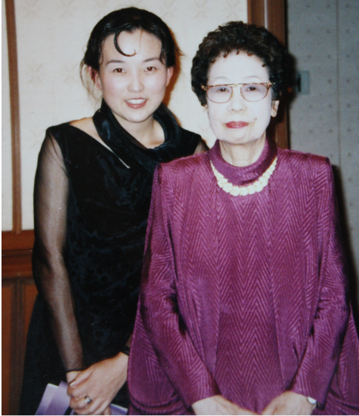
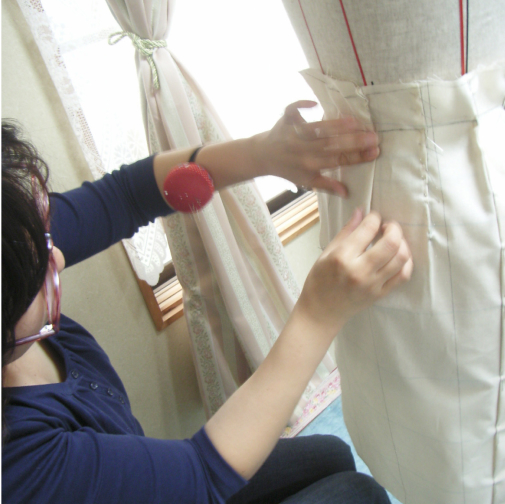

近藤れん子先生と
立体裁断教室の誕生、
そして生徒さんたち…
近藤れん子先生との出会い
近藤れん子先生は、1964年にパリに留学され立体裁断を学ばれて日本に戻り、貴重な立体裁断の技術を日本に広めてくださった、立体裁断の世界の至宝のような存在の方です。
先生がおっしゃっていたのは、「ラグランスリーブのこのシワはなぜできるのか」と、日本でまわりの先生方にご質問されても、ラグランスリーブとはそういうものだと教えられていたのですが、外国から入ってきた雑誌にシワのないラグランスリーブが載っていて、留学をご決心されたと語られていました。それからフランス語を勉強され3ヶ月間船に乗り、40歳を過ぎてから何度も留学されて、東京立体裁断研究所を設立し、私たち服飾の仕事に携わる者たちに、“本当に着やすく、シルエットの綺麗な洋服を作ることが出来る立体裁断の手法” を教えてくださった、素晴らしい先生です。
フランスに留学された時、フランス人の先生から「あなたはフランス語を話せる、初めての日本人の生徒ね」と言われたそうです。留学中近藤れん子先生は、わからないことがあると、なぜ? なぜ? なぜ? と、いつもフランス人の先生にわかるまで質問をしていたそうです。そのご経験から、立体裁断の理論や技法をしっかりと身につけてご帰国。そのおかげで、私たちは本物の立体裁断の理論 ・それに基づく技法をしっかりと理解することが出来ました。
私が近藤れん子先生の東京立体裁断研究所に通うきっかけを下さったのは、会社の先輩でした。
私が入社させて頂いた株式会社ジュン・アシダは、日本屈指の素晴らしい技術者が集まっている会社でした。入社して専門学校で習ってきたことが全く通用しないことがわかり、先輩や上司からあらゆることを教わらなければいけませんでした。そして驚いたのが、20名くらいいらっしゃったパタンナーの先輩や上司が全員近藤れん子先生のカーブルーラーを使ってパターンをひいていたのです。身近で一番いろいろと教えてくださった先輩が近藤れん子先生のお教室に通われていて、とても素晴らしい先生だと教えてくださいました。
先輩や上司に教えて頂くばかりでご迷惑をおかけしてはいけないと思い、自分の技術を高めるために、入社2年目から近藤れん子先生の東京立体裁断研究所に通い始めました。初めて近藤れん子先生の講義を受けた日(初日は実技ではなく、講義でした)、それまで習ってきたことで理由や理屈がわからなかったことが、すべてれん子先生のご説明で理由がわかり、だからこうなんだと、目からうろこのお話ばかりでした。朝から夕方までの講義で、集中しすぎて深く呼吸しなかったため、脳が酸欠状態になり帰り道、あくびばかりしながら帰ったのを覚えております。
会社を辞めさせていただくときは本当に申し訳なく、技術力がとても高い会社でしたので、中途採用で入るのがとても難しい会社でしたが、人事部長から辞めてから10年以内は中途採用試験無しで採用して頂けるお約束を頂いたのですが、戻ることはありませんでした。今でも製図部で大変お世話になり可愛がっていただいた、製図部の部長と上司とは交流をさせて頂いております。

れん子先生のファッションショー

れん子先生と私
北海道で立体裁断教室の始まり
日本で立体裁断の神のような存在の近藤れん子先生から立体裁断の技術のすべてを学び、あらゆるデザインを自分の手でカタチに創り上げる喜びを胸に、北海道に戻って参りました。
口コミでしょうか、すぐにオーダーのお仕事をいただき、徹夜、徹夜、徹夜の日々を送っていたころ、「僕を弟子にしてください」と、服飾専門学校卒業間近の一人の学生が現れました。猫の手も借りたいほど忙しかった頃でしたので、スタッフ第一号になって頂きました。オーダーの仕事を必死にこなしながら、そのスタッフの方に「実は北海道のアパレルの発展の為に、いつか立体裁断教室をやりたい」と話しましたところ、その方の同級生に立体裁断を学びたい人がいると紹介され、教室が出来上がる前に一期生の生徒さんが誕生しました。オーダーの仕事のかたわら、立体裁断教室の準備を進めました。
近藤れん子先生の許可を得ず、勝手に教え始めた生徒さんのことを先生がこころよく思っていなかったことを知っていましたので、まず先生に許可を頂くための連絡をいたしました。「あなたはどんどん頑張りなさい」という大切なお言葉を頂き、準備に取りかかりました。
近藤れん子先生に教えて頂いたカリキュラムを基に、先生のデザインをそのまま教えるのは、先生に対して大変失礼だと思い、私の教室では、私自身が全てをデザインしてカリキュラムを決め、卒業して起業される生徒さん達が、どんな洋服が流行っても作ることが出来るようにと、それぞれのアイテムやデザインの中に、必要で大切な技術をしっかりと詰めたデザインにして、それを立体で組み、教材に致しました。一期生の生徒さんには「開講はまだか、まだか」、と催促して頂いたおかげで準備に2～3年ほどお待ち頂きましたが、2005年10月に立体裁断教室JOCHICAJELを開講致しました。
生徒さんのニーズから生まれた縫製教室
一期生の生徒さんは、東京の服飾専門学校に通われていたのですが、ご家庭の事情で北海道に戻られご自分でお仕事をしてお金を貯め、北海道の服飾専門学校に入り直された、とてもガッツのある生徒さんでした。彼の素晴らしい集中力と繊細さで、立体裁断の技術をどんどんと身につけて、全てのカリキュラムを終了されても、立体裁断の魅力から離れられず、月に一回コースでコレクションラインなどご自分で組みたいものを決めて、何年も通われていました。講師の私と遜色ないほど、立体裁断で素晴らしいものを組めるようになったその生徒さんに、「なぜ起業しないのですか?」と、伺ったところ「縫えないから」と言われ、“ハッ”と致しました。それからその生徒さんには縫い方も教えさせていただき、その後もご希望の方には縫製の指導も始めました。
その経験から、すべてのデザインのパターンを作り出すことが出来る立体裁断の技術だけではなく、そのパターンを使って洋服にまで仕立て上げる、「縫製教室JOCHICAJEL」を2022年11月に開講いたしました。
2005年の立体裁断教室JOCHICAJELの開講から今まで、沢山の素晴らしい生徒さん達に通って頂きました。
とても嬉しかった生徒さんのお言葉として、全てのカリキュラムを終えられようとしていた卒業間際の生徒さんが「ウインドウショッピングをしていても、あの洋服もこの洋服も、どれもこれも作れるようになってしまったから、洋服が買えなくなった」と言っていただいた時に、まさに私も近藤れん子先生から教えて頂いた時に同じ気持ちになったことを思い出し、本当に嬉しく感動するお言葉に感謝しております。
さまざまなバックグラウンドの生徒さんとの出会い
生徒さん達の中には、まったく洋裁のご経験がなく事務のお仕事をされながら、手に職をつけたいというお気持ちで通われていた生徒さん達が、何人もいらっしゃいました。
お教室に入る前から、ご自分のブランドを作りたくて、織りネーム(洋服につける自分のブランド名の入ったタグ)を既にお持ちの生徒さん達も沢山いらっしゃいました。
記憶に鮮明だったのは、オーストリアの服飾の学校でデザインを学ばれ、イタリアのエルメスで釦(ボタン)のデザイナーをしていた方が、技術を身につけてご自分のコレクションをやりたいと、入校されたことです。その方の余談ですが、エルメスではスカーフの鳥のモチーフの専属のデザイナーもいたと伺い、さすがはエルメスと驚きました。その方が入校される前に、私が東京でパタンナーとして勤めさせて頂いていた会社ジュン・アシダのソーイング部(縫製部)で働いていた方が、その後イタリアに渡り、エルメスのスーツをお仕立てしていた小さな工房で修行されたあと、弊社のアトリエのスタッフとして縫製のお仕事を手伝ってもらっていたことがありました。北海道にいながら、エルメスのお仕事をされていた方お二人にお会いできて、私にとって貴重な経験をさせて頂きました。
お人形が大好きな生徒さんもいらっしゃいました。フィギュアというのでしょうか。お人形の洋服やドレスを作って売りたいということで、人間の半分くらいの大きさの関節もきれいに動く、とても精巧なお人形をお持ちになり、そのお人形の洋服を作るためのボディもありました。立体裁断の技術があればどんなものでも形にすることが出来るので、お人形の洋服やドレスもとても綺麗なシルエットで出来上がります。その生徒さんがおっしゃるには、手の込んだ綺麗な洋服やドレスはとても高いお値段で売れているそうです。
私が通っていた東京文化服装学院の、デザイン科を卒業された先輩が入校されました。東京の有名なブラウスの会社で長年デザイナーとして働かれた後、ご自分でブライダルのアクセサリーやヘッドドレスをデザインして作り、卸しをしている会社を通して全国のブライダルのお店で扱われていました。ブライダルの雑誌でも、よく商品が紹介されていました。お母様のご看病のために北海道に戻られてお教室に通われていたのですが、ものづくりをする所作の美しさや無駄のない動き、ものごとへの取り組み方など、とても素晴らしいオーラがあって、私を含めその場にいた生徒さん達にもとてもいい影響を与えてくださいました。素晴らしいセンスと技術をお持ちなので、北海道に戻ってこられても、とてもお忙しくされているご様子でした。抜きんでたセンスと技術があれば、お仕事はついてくるのだなと、あらためて感じさせて頂きました。尊敬する先輩として、カリキュラムを終了して卒業されてからも、交流を持たせて頂きいつも刺激を頂いております。その方の余談ですが、大きなブラウスの会社でデザイナーをされていた時、生地のプリントの柄のデザインもされたり、海外出張もあったそうです。お話を聞いているだけでワクワクしてしまいます。その方の作品や商品を見られるInstagramがこちらになります。とても素敵な世界観ですので、ぜひご覧になってください。➜deco_sakuracoさんインスタグラム
将来どの道に進もうか悩まれている時に、“自分は洋服が好き”と入校された生徒さんがいました。本当に真剣に技術を身につけていき、服飾の世界で生きていきたいとおっしゃるので、そのためにはお教室に通うだけでなく、履歴書に服飾専門学校卒業の経歴もあったほうが就職に有利だからとアドバイスさせて頂き、生徒さんはお教室に通いながら専門学校にも通われ、今は東京のテーラーでお仕立ての仕事をしています。その生徒さんからとても嬉しいお言葉を頂きました。東京に行かれた後、「今、頑張れているのも立体の教室で丁寧な服作りを学べたおかげだと思っています。先生に出会えたおかげで人生がすごく良い方向に進んで感謝の気持ちでいっぱいです! これからも技術の向上を目指して頑張ります。ありがとうございました!」というお言葉でした。でも、この生徒さんはご自分で”洋服が好き”と、教室に通う決心をして努力を重ね、東京での就職を成し遂げたのも生徒さんのお力だと思っております。そして嬉しいことに、同じ職場で働いている方とご結婚して、お二人でご挨拶にみえました。ご主人様が生徒さんが就職された後に、指導係として生徒さんに教えられていたのですが、“こんなに出来る人は初めて!”と、とても驚かれ、“立体裁断とはなんだ”と、ご一緒に来られた時におっしゃられていたのが、とても印象的でした。 でもそれもやはり、当教室での基礎の上に、生徒さんの卓越した集中力と努力で、東京に行かれた後もどんどん技術を身につけ、素晴らしい腕になっていかれたのだと思っております。 その生徒さんが東京で頑張っているご様子のInstagramがこちらです。どれだけ頑張っているかが伝わってくる素晴らしいもので、私自身も頑張らなければと思わせて頂けるインスタです。
➜ Tailor sniff&scurryさんインスタグラム
また、生徒さんの中には、東京でコムデギャルソンのパタンナーのアシスタントをしていた方が、体調を崩されて一時期北海道に戻られている間、旭川から当教室に通われ、立体裁断の技術を身につけられて、もう一度東京でパタンナーをやりたいとおっしゃっていました。
遠方から通われる生徒さんもいらして、釧路や帯広からも通われていました。また、東京からはフリーランスのパタンナーを長くなさっている方が、立体裁断の技術を身につけて、ご自分の弱点を克服したいと通われていました。
一期生の生徒さんのように、全てのカリキュラムを終えても立体裁断のお教室に通われる方や、遠方から来られる生徒さんの為に、月1回コース、月2回コースを作りました。
今まで、洋裁をやりたかったけれどやる機会がなく、やっと今習えると、お教室に通われる生徒さんも沢山いらっしゃいました。今その方たちの為に、体のご負担が少ない短時間のコースと、ここがわからなかった、というワンポイントレッスンのコースも現在準備中です。ご希望の方はご連絡下さい。可能な限り対応させて頂きます。


コロナの後とこれから
コロナで密になるのを避けるため、しばらくお教室をお休みにして、生徒さんの募集も全くしていなかったのですが、コロナが落ち着いてきた2022年11月・12月と、立て続けに生徒さんから入校したいとご連絡があり、予期せぬところでお教室を再開したのですが、翌年の元旦の初夢に、近藤れん子先生のお教室の香りとともに、教室に向かうらせん階段を上がっている夢をみて、れん子先生に優しく背中を押されているように感じ、感動していましたら、1月にも生徒さんが入校されました。その生徒さんも本当に頑張っていらっしゃっていて、卒業するころにはオーダーのお洋服のお仕立てが出来るようになりたいと、大きな夢に向かって頑張っています。
北海道に戻ってきた当初はまだそんなにネットの時代でもなく、お仕事もお客様のご紹介からご紹介へと、次々と頂いておりましたが、今はネットでどこにいてもお仕事が出来る時代になってきました。教室も北海道以外から生徒さんが来られるようになったり、オーダーのお客様もいろんなところでオーダーをした結果、私のことをとても気に入ってくださり、東京からお仮縫いに札幌まで来て下さる方もいらっしゃいます。また、海外からも立体裁断の講義をしてほしいと依頼を受け、その国の各地から集まったプロのパタンナーに講義をさせて頂いたこともあります。最初は北海道のアパレルの発展の為に始めた立体裁断教室ですが、生徒さん達の大切な夢が叶えられるように、生徒さん達には素晴らしい技術を身につけて頂き、日本全国、そして海外にも羽ばたいてご活躍して頂けるように、私も努力して参ります。どうぞよろしくお願いいたします。